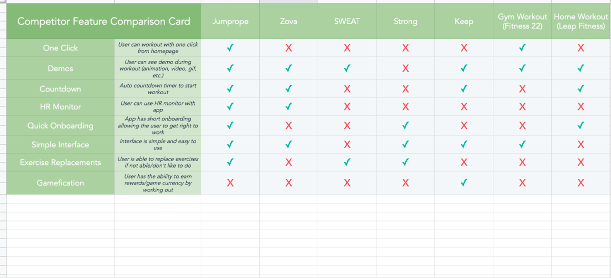

CALL FOR BACKUP
After testing the MVP with a handful of users, The product owner and I
decided that it was best to bring on someone with more experience to help me through the process of
cleaning up the interface of the app and building the information architecture for the app.
At this point, the project started to lose momentum and it was put on the
backburner.
ACCELERATION & EXAMINATION
It was during the onset of COVID-19 that the project started to pick
back up again and we soon came to realize that the project needed a complete overhaul due to the
saturated market of fitness apps and at home fitness equipment. With myself and the product
owner steering the project, we want to make sure that this time around we find the missing link
for the users. To do this we collaborated with a market research analyst to construct a survey
to better understand the current market.
As the survey was run, I conducted my own competitive analysis of the top apps in the fitness
industry.
COMPETITIVE ANALYSIS
To complete the competitive analysis, I researched the top 5 fitness
apps:
• Zova
• SWEAT
• Keep
• Gym Workout Planner (by Fitness 22)
• Home Workout - No Equipment (by Leap Fitness Group)

From this competitive analysis I have learned that while there is a very saturated
market, Jumprope can set itself apart with most liked features and doing them well. While majority
of the apps have a lot of the same features, they don’t necessarily do them well. It’s the execution
that will set us apart from the competition.
WHERE WE’RE AT
At this point, we are in the stage of analyzing our survey data with a very capable data
analyst. From here, we will run a second survey to narrow down the information we have gathered
from the first data set, giving us a better understanding of where we can fit into the market.
Once we have this information I will be constructing the following:
• 2 User personas
• User behavior diagram
• New information architecture
• Screen sketches
• Wireframes + working prototype
• Mockups + working prototype
• Design style guide + art files for development
It is important to note that, during this revamp of the app, I will be
engaging with the users and conducting user testing at every step.